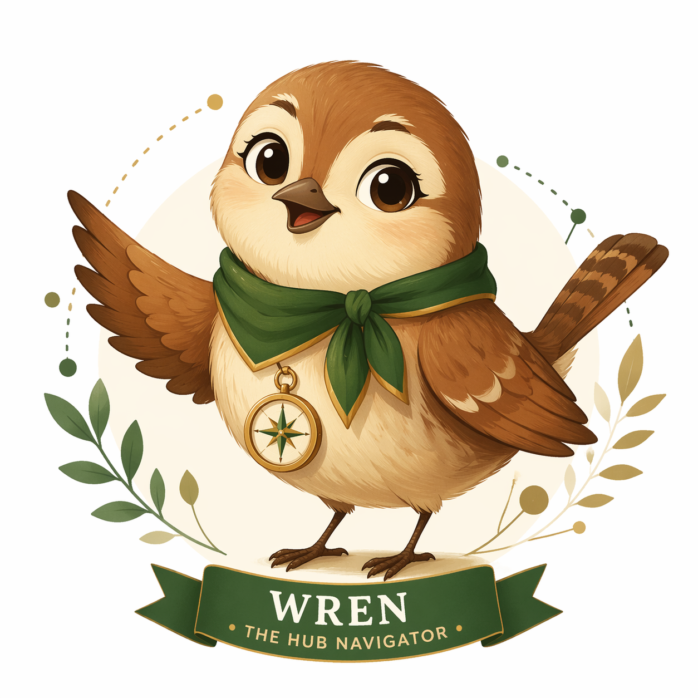

About Us
The Hub is a central, flexible, and welcoming space designed for students in Preschool through 5th grade. It serves as an extension of the classroom, a place where literacy, curiosity, enrichment learning, and digital citizenship all come together.
Students don't just visit The Hub, they grow here, guided by dedicated educators and surrounded by resources curated to spark wonder and deepen understanding.
Our Framework
Everything students do in The Hub flows through three interconnected stages of growth, a H.U.B. Pathway that shapes how they engage with information and become confident learners.
For More Information
| Name | Title | Contact For | |
|---|---|---|---|
|
 |
Wren
Have a question? Ask Wren
|
The Hub Navigator (Chatbot) | Instant answers about programs, policies, and everything in The Hub |

|
Mrs. Arlene Castellanos
acastellanos@wcsmiami.org
|
ES Technology/Enrichment/Resource Teacher | Reflex, IXL |

|
Mrs. Manya Glavach
mglavach@wcsmiami.org
|
ES Media Specialist | Accelerated Reader, Warrior Lab |

|
Mrs. Melissa La Rosa
mlarosa@wcsmiami.org
|
GRASP Director | GRASP Intervention |

|
Mrs. Claudia Pastrana
cpastrana@wcsmiami.org
|
PS/ES Assistant Principal, Curriculum | Curriculum, Assessment |

|
Mrs. Ismarely Torres
itorres@wcsmiami.org
|
Assistant Director of Communications | Sign up for The BRIEF, a weekly newsletter with updates on all things Westminster |
|
IT Department
mySchoolBuilding Support Portal
|
Technology & myWCS Support | Login issues with myWCS or technology issues |
"Strong leaders are not formed by limiting possibilities, but by rooting students in Christ and opening doors to a world of opportunity."
Hub Library Mission